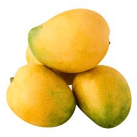
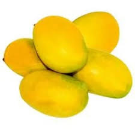

Introduction
Neelam mango is a famous mango variety known for its strong aroma, sweet taste, and small size. It is especially popular because it is available later than many other mango varieties.
Origin
Neelam mango is mainly grown in South India, especially in Andhra Pradesh, Tamil Nadu, and Karnataka. It is widely loved for its rich flavor and long shelf life.
Taste & Texture
Neelam mangoes are sweet, juicy, and highly aromatic. The pulp is orange-colored, smooth, and less fibrous, making it excellent for eating fresh.
Uses
• Fresh eating
• Mango juice
• Milkshakes
• Ice creams
• Sweets and desserts
Health Benefits
• Rich in Vitamin A and C
• Helps digestion
• Boosts immunity
• Good for healthy skin and eyes
Season
Neelam mangoes are available from June to August.
⬅ Back to Home